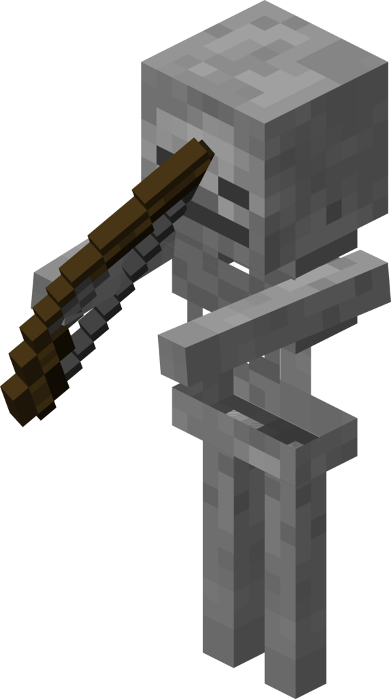

Skeletons, just like zombies, are a common hostile mob in Minecraft.
StatsJust like zombies and the player, skeletons have 20 HP.
However, unlike zombies, they are equipped with a bow. This makes them able to attack the player from a range.
Their ranged attack (an arrow) varies in damage, but averages 3 damage on easy, 4 on normal, and 4 on hard.
BehaviorSkeletons just like zombies, spawn in groups of 4, only when it is dark.
Skeletons have a pursuing distance of 16 blocks.
Once within 15 blocks, skeletons will start shooting at the player with a bow, as long as there is a clear line of sight.
Just like zombies, skeletons are undead mobs, so they will burn when exposed to sunlight.
